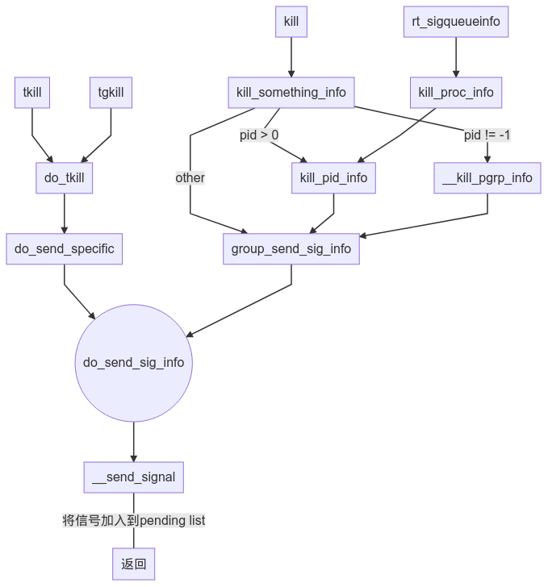
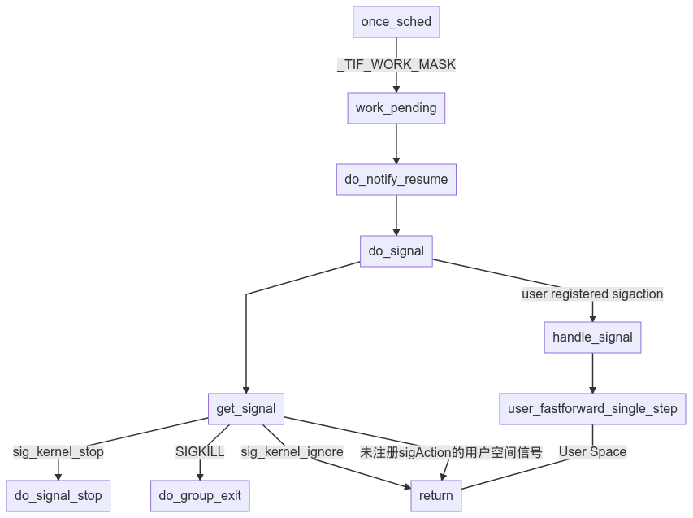
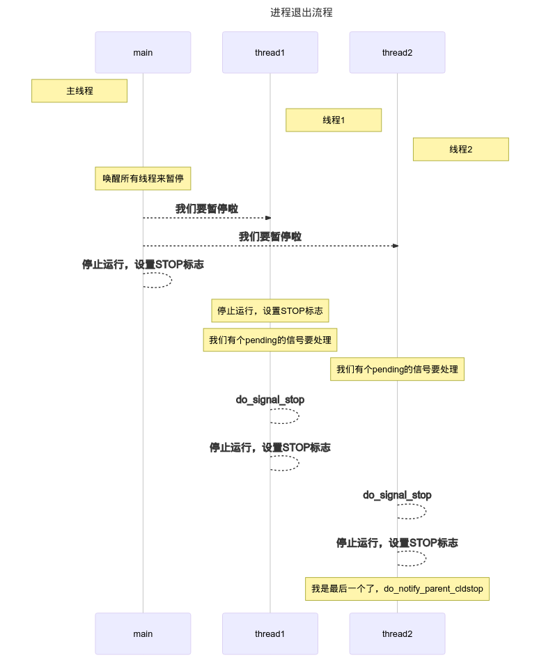
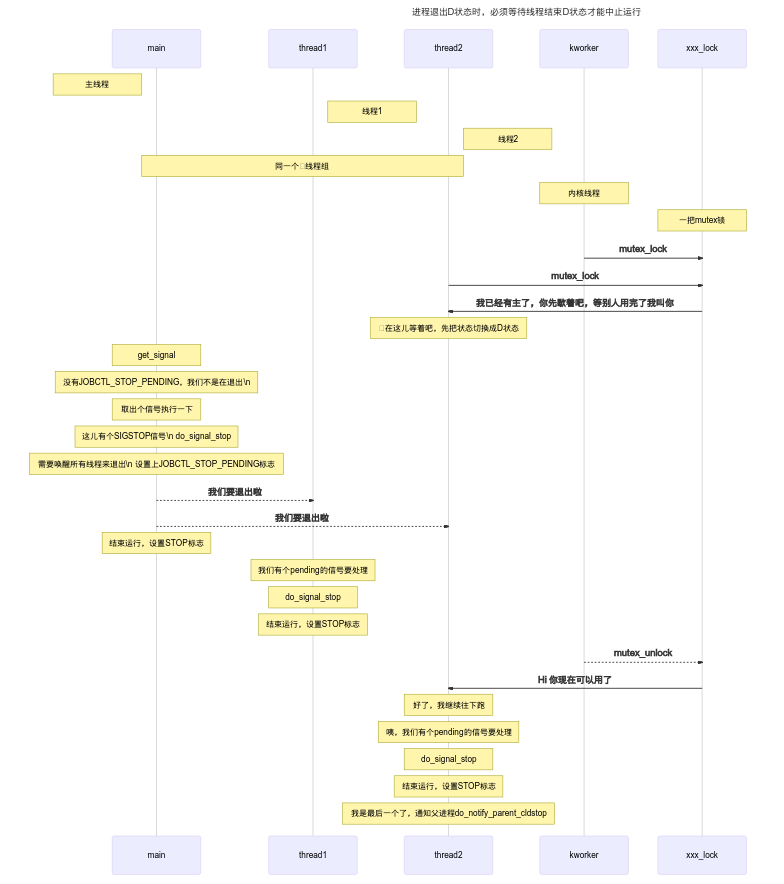
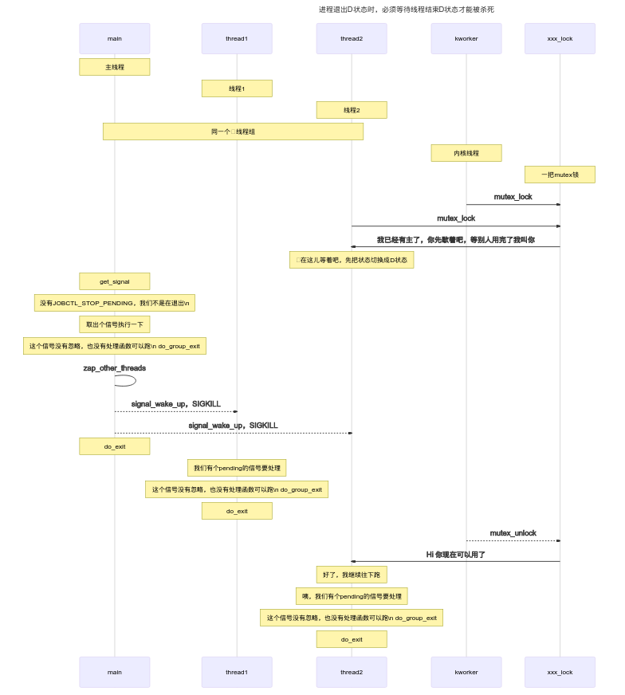

<!DOCTYPE html>
<html lang="zh">
<head>
<!-- 2020-10-07 Wed 23:36 -->
<meta charset="utf-8">
<meta name="viewport" content="width=device-width, initial-scale=1">
<title>Linux Signal Handle</title>
<meta name="generator" content="Org mode">
<meta name="author" content="Schspa">
<meta name="description" content="security.org"
>
<meta name="keywords" content="Security">
<link rel="shortcut icon" href="/images/rose-red.png" type="image/x-icon" />
<link rel="stylesheet" href="/css/animate.min.css" />
<link rel="stylesheet" href="/css/all.min.css" />
<link rel="stylesheet" type="text/css" href="/css/style.css" />
<link rel="stylesheet" type="text/css" href="/css/navbar.css" />
<script src="/js/jquery.min.js"></script>
<script src="/js/darkreader.js"></script>
<script src="/user.config.js"></script>
<script src="/js/main.js"></script>
</head>
<body>
<div id="preamble" class="status">
<div class="mobile-container">
  <!-- Top Navigation Menu -->
  <div class="topnav">
    <div id="header">
      <a href="/" class="logo">Schspa's Blog</a>
      <a href="javascript:void(0);" class="icon" onclick="toggleheader()">
        <i class="fa fa-bars"></i>
      </a>
    </div>
    <div id="nav_headers">
      <a href="/sitemap.html" class="menu-item">Categories</a>
    </div>
  </div>
  <!-- End smartphone / tablet look -->
</div>

<header id="header" class="header">
  <div class="logo-wrapper">
    <a href="/" class="logo">Schspa's Blogs</a>
  </div>

  <nav class="site-navbar">
    <ul id="menu" class="menu">
      <li class="menu-item">
        <a class="menu-item-link" href="/">Home</a>
      </li>
      <li class="menu-item">
        <a class="menu-item-link" href="/sitemap.html">Categories</a>
      </li>
    </ul>
  </nav>
</header>
</div>
<div id="content">
<h1 class="title">Linux Signal Handle</h1>
<div id="table-of-contents">
<h2>Table of Contents</h2>
<div id="text-table-of-contents">
<ul>
<li><a href="#linux-signal-handle">1. Linux signal handle</a></li>
<li><a href="#提纲">2. 提纲：</a>
<ul>
<li><a href="#man-pages">2.1. man pages</a></li>
</ul>
</li>
<li><a href="#信号基本概念以及定义">3. 信号基本概念以及定义</a>
<ul>
<li><a href="#signal设计目的">3.1. Signal设计目的</a></li>
<li><a href="#linux-信号定义">3.2. 1. Linux 信号定义</a></li>
</ul>
</li>
<li><a href="#信号发送">4. 信号发送</a>
<ul>
<li><a href="#内核中信号发送流程">4.1. 内核中信号发送流程</a>
<ul>
<li><a href="#alloc-sigqueue-结构题">4.1.1. alloc sigqueue 结构题</a></li>
</ul>
</li>
<li><a href="#信号接收">4.2. 信号接收</a>
<ul>
<li><a href="#信号处理途径">4.2.1. 信号处理途径</a></li>
<li><a href="#do_signal_stop流程-sigstop">4.2.2. do_signal_stop流程 (SIGSTOP)</a></li>
<li><a href="#kill流程-sigkill">4.2.3. kill流程 (SIGKILL)</a></li>
<li><a href="#segv流程">4.2.4. SEGV流程</a></li>
<li><a href="#signal调试">4.2.5. Signal调试</a></li>
</ul>
</li>
</ul>
</li>
</ul>
</div>
</div>

<div id="outline-container-linux-signal-handle" class="outline-2">
<h2 id="linux-signal-handle"><span class="section-number-2">1</span> Linux signal handle</h2>
<div class="outline-text-2" id="text-linux-signal-handle">
</div>
</div>

<div id="outline-container-提纲" class="outline-2">
<h2 id="提纲"><span class="section-number-2">2</span> 提纲：</h2>
<div class="outline-text-2" id="text-提纲">
<ul class="org-ul">
<li>信号基本概念以及定义<br></li>
<li>信号发送<br></li>
<li>信号接收<br></li>
<li>SIGSTOP流程<br></li>
<li>SIGKILL流程<br></li>
<li>SIGSEGV流程<br></li>
</ul>
</div>

<div id="outline-container-man-pages" class="outline-3">
<h3 id="man-pages"><span class="section-number-3">2.1</span> <a href="http://man7.org/linux/man-pages/man7/signal.7.html">man pages</a></h3>
<div class="outline-text-3" id="text-man-pages">
</div>
</div>
</div>

<div id="outline-container-信号基本概念以及定义" class="outline-2">
<h2 id="信号基本概念以及定义"><span class="section-number-2">3</span> 信号基本概念以及定义</h2>
<div class="outline-text-2" id="text-信号基本概念以及定义">
</div>

<div id="outline-container-signal设计目的" class="outline-3">
<h3 id="signal设计目的"><span class="section-number-3">3.1</span> Signal设计目的</h3>
<div class="outline-text-3" id="text-signal设计目的">
<ul class="org-ul">
<li>siganl提供一个基础的异步通知机制而设计<br></li>
<li>signal是一种IPC手段<br></li>
</ul>
<p>
与其他IPC手段不同的是，不需要专门的线程block住去等待消息<br>
</p>
</div>
</div>

<div id="outline-container-linux-信号定义" class="outline-3">
<h3 id="linux-信号定义"><span class="section-number-3">3.2</span> 1. Linux 信号定义</h3>
<div class="outline-text-3" id="text-linux-信号定义">
<p>
<a href="https://elixir.bootlin.com/linux/latest/source/include/uapi/asm-generic/signal.h">include/uapi/asm-generic/signal.h</a><br>
</p>

<div class="org-src-container">
<pre class="src src-C"><span style="color: #51afef; font-weight: bold;">#define</span> <span style="color: #dcaeea;">_NSIG</span>       64
<span style="color: #51afef; font-weight: bold;">#define</span> <span style="color: #dcaeea;">_NSIG_BPW</span>   __BITS_PER_LONG
<span style="color: #51afef; font-weight: bold;">#define</span> <span style="color: #dcaeea;">_NSIG_WORDS</span> (_NSIG / _NSIG_BPW)

<span style="color: #51afef; font-weight: bold;">#define</span> <span style="color: #dcaeea;">SIGHUP</span>       1
<span style="color: #51afef; font-weight: bold;">#define</span> <span style="color: #dcaeea;">SIGINT</span>       2
<span style="color: #51afef; font-weight: bold;">#define</span> <span style="color: #dcaeea;">SIGQUIT</span>      3
<span style="color: #51afef; font-weight: bold;">#define</span> <span style="color: #dcaeea;">SIGILL</span>       4
<span style="color: #51afef; font-weight: bold;">#define</span> <span style="color: #dcaeea;">SIGTRAP</span>      5
<span style="color: #51afef; font-weight: bold;">#define</span> <span style="color: #dcaeea;">SIGABRT</span>      6
<span style="color: #51afef; font-weight: bold;">#define</span> <span style="color: #dcaeea;">SIGIOT</span>       6
<span style="color: #51afef; font-weight: bold;">#define</span> <span style="color: #dcaeea;">SIGBUS</span>       7
<span style="color: #51afef; font-weight: bold;">#define</span> <span style="color: #dcaeea;">SIGFPE</span>       8
<span style="color: #51afef; font-weight: bold;">#define</span> <span style="color: #dcaeea;">SIGKILL</span>      9
<span style="color: #51afef; font-weight: bold;">#define</span> <span style="color: #dcaeea;">SIGUSR1</span>     10
<span style="color: #51afef; font-weight: bold;">#define</span> <span style="color: #dcaeea;">SIGSEGV</span>     11
<span style="color: #51afef; font-weight: bold;">#define</span> <span style="color: #dcaeea;">SIGUSR2</span>     12
<span style="color: #51afef; font-weight: bold;">#define</span> <span style="color: #dcaeea;">SIGPIPE</span>     13
<span style="color: #51afef; font-weight: bold;">#define</span> <span style="color: #dcaeea;">SIGALRM</span>     14
<span style="color: #51afef; font-weight: bold;">#define</span> <span style="color: #dcaeea;">SIGTERM</span>     15
<span style="color: #51afef; font-weight: bold;">#define</span> <span style="color: #dcaeea;">SIGSTKFLT</span>   16
<span style="color: #51afef; font-weight: bold;">#define</span> <span style="color: #dcaeea;">SIGCHLD</span>     17
<span style="color: #51afef; font-weight: bold;">#define</span> <span style="color: #dcaeea;">SIGCONT</span>     18
<span style="color: #51afef; font-weight: bold;">#define</span> <span style="color: #dcaeea;">SIGSTOP</span>     19
<span style="color: #51afef; font-weight: bold;">#define</span> <span style="color: #dcaeea;">SIGTSTP</span>     20
<span style="color: #51afef; font-weight: bold;">#define</span> <span style="color: #dcaeea;">SIGTTIN</span>     21
<span style="color: #51afef; font-weight: bold;">#define</span> <span style="color: #dcaeea;">SIGTTOU</span>     22
<span style="color: #51afef; font-weight: bold;">#define</span> <span style="color: #dcaeea;">SIGURG</span>      23
<span style="color: #51afef; font-weight: bold;">#define</span> <span style="color: #dcaeea;">SIGXCPU</span>     24
<span style="color: #51afef; font-weight: bold;">#define</span> <span style="color: #dcaeea;">SIGXFSZ</span>     25
<span style="color: #51afef; font-weight: bold;">#define</span> <span style="color: #dcaeea;">SIGVTALRM</span>   26
<span style="color: #51afef; font-weight: bold;">#define</span> <span style="color: #dcaeea;">SIGPROF</span>     27
<span style="color: #51afef; font-weight: bold;">#define</span> <span style="color: #dcaeea;">SIGWINCH</span>    28
<span style="color: #51afef; font-weight: bold;">#define</span> <span style="color: #dcaeea;">SIGIO</span>       29
<span style="color: #51afef; font-weight: bold;">#define</span> <span style="color: #dcaeea;">SIGPOLL</span>     SIGIO
<span style="color: #5B6268;">/*</span>
<span style="color: #5B6268;">#define SIGLOST     29</span>
<span style="color: #5B6268;">*/</span>
<span style="color: #51afef; font-weight: bold;">#define</span> <span style="color: #dcaeea;">SIGPWR</span>      30
<span style="color: #51afef; font-weight: bold;">#define</span> <span style="color: #dcaeea;">SIGSYS</span>      31
<span style="color: #51afef; font-weight: bold;">#define</span> <span style="color: #dcaeea;">SIGUNUSED</span>   31

<span style="color: #5B6268;">/* </span><span style="color: #5B6268;">These should not be considered constants from userland.</span><span style="color: #5B6268;">  */</span>
<span style="color: #51afef; font-weight: bold;">#define</span> <span style="color: #dcaeea;">SIGRTMIN</span>    32
<span style="color: #51afef; font-weight: bold;">#if</span><span style="color: #51afef; font-weight: bold;">n</span><span style="color: #51afef; font-weight: bold;">def</span> SIGRTMAX
<span style="color: #51afef; font-weight: bold;">#define</span> <span style="color: #dcaeea;">SIGRTMAX</span>    _NSIG
<span style="color: #51afef; font-weight: bold;">#endif</span>
</pre>
</div>
</div>

<ul class="org-ul">
<li><a id="内核相关结构体"></a>内核相关结构体<br>
<div class="outline-text-5" id="text-内核相关结构体">
<p>
Signal 内部数据结构<br>
</p>

<div class="org-src-container">
<pre class="src src-C"><span style="color: #51afef;">struct</span> <span style="color: #ECBE7B;">task_struct</span> {
  <span style="color: #5B6268;">/* </span><span style="color: #5B6268;">Signal handlers:</span><span style="color: #5B6268;"> */</span>
  <span style="color: #51afef;">struct</span> <span style="color: #ECBE7B;">signal_struct</span>      *<span style="color: #dcaeea;">signal</span>;    <span style="color: #5B6268;">//</span><span style="color: #5B6268;">&#21516;&#19968;&#32447;&#31243;&#32452;&#20849;&#26377;&#30340;sigpending&#38142;&#34920;</span>
  <span style="color: #51afef;">struct</span> <span style="color: #ECBE7B;">sighand_struct</span>     *<span style="color: #dcaeea;">sighand</span>;
  <span style="color: #ECBE7B;">sigset_t</span>          <span style="color: #dcaeea;">blocked</span>;
  <span style="color: #ECBE7B;">sigset_t</span>          <span style="color: #dcaeea;">real_blocked</span>;
  <span style="color: #5B6268;">/* </span><span style="color: #5B6268;">Restored if set_restore_sigmask() was used:</span><span style="color: #5B6268;"> */</span>
  <span style="color: #ECBE7B;">sigset_t</span>          <span style="color: #dcaeea;">saved_sigmask</span>;
  <span style="color: #51afef;">struct</span> <span style="color: #ECBE7B;">sigpending</span>     <span style="color: #dcaeea;">pending</span>;        <span style="color: #5B6268;">//</span><span style="color: #5B6268;">&#31169;&#26377;&#30340;sigpending&#38142;&#34920;</span>
  <span style="color: #ECBE7B;">unsigned</span> <span style="color: #ECBE7B;">long</span>         <span style="color: #dcaeea;">sas_ss_sp</span>;
  <span style="color: #ECBE7B;">size_t</span>                <span style="color: #dcaeea;">sas_ss_size</span>;
  <span style="color: #ECBE7B;">unsigned</span> <span style="color: #ECBE7B;">int</span>          <span style="color: #dcaeea;">sas_ss_flags</span>;
}&#65307;

<span style="color: #51afef;">struct</span> signal_struct {
    <span style="color: #ECBE7B;">atomic_t</span>        <span style="color: #dcaeea;">sigcnt</span>;
    <span style="color: #ECBE7B;">atomic_t</span>        <span style="color: #dcaeea;">live</span>;
    <span style="color: #ECBE7B;">int</span>         <span style="color: #dcaeea;">nr_threads</span>;
    <span style="color: #51afef;">struct</span> <span style="color: #ECBE7B;">list_head</span>    <span style="color: #dcaeea;">thread_head</span>;

    <span style="color: #ECBE7B;">wait_queue_head_t</span>   <span style="color: #dcaeea;">wait_chldexit</span>;  <span style="color: #5B6268;">/* </span><span style="color: #5B6268;">for wait4()</span><span style="color: #5B6268;"> */</span>
  <span style="color: #5B6268;">/* </span><span style="color: #5B6268;">shared signal handling:</span><span style="color: #5B6268;"> */</span>
    <span style="color: #51afef;">struct</span> <span style="color: #ECBE7B;">sigpending</span>   <span style="color: #dcaeea;">shared_pending</span>;

    <span style="color: #5B6268;">/* </span><span style="color: #5B6268;">thread group exit support</span><span style="color: #5B6268;"> */</span>
    <span style="color: #ECBE7B;">int</span>         <span style="color: #dcaeea;">group_exit_code</span>;
    <span style="color: #51afef;">struct</span> <span style="color: #ECBE7B;">task_struct</span>  *<span style="color: #dcaeea;">group_exit_task</span>;
    <span style="color: #51afef;">struct</span> <span style="color: #ECBE7B;">rlimit</span> <span style="color: #dcaeea;">rlim</span>[RLIM_NLIMITS];
}&#65307;

<span style="color: #51afef;">struct</span> sigpending {
    <span style="color: #51afef;">struct</span> <span style="color: #ECBE7B;">list_head</span> <span style="color: #dcaeea;">list</span>;
    <span style="color: #ECBE7B;">sigset_t</span> <span style="color: #dcaeea;">signal</span>;
};

<span style="color: #51afef;">struct</span> <span style="color: #ECBE7B;">sigqueue</span> {
    <span style="color: #51afef;">struct</span> <span style="color: #ECBE7B;">list_head</span> <span style="color: #dcaeea;">list</span>;
    <span style="color: #ECBE7B;">int</span> <span style="color: #dcaeea;">flags</span>;
    <span style="color: #ECBE7B;">siginfo_t</span> <span style="color: #dcaeea;">info</span>;
    <span style="color: #51afef;">struct</span> <span style="color: #ECBE7B;">user_struct</span> *<span style="color: #dcaeea;">user</span>;
};

<span style="color: #51afef;">struct</span> <span style="color: #ECBE7B;">sighand_struct</span> {
    <span style="color: #ECBE7B;">atomic_t</span>        <span style="color: #dcaeea;">count</span>;
    <span style="color: #51afef;">struct</span> <span style="color: #ECBE7B;">k_sigaction</span>  <span style="color: #dcaeea;">action</span>[_NSIG];
    <span style="color: #ECBE7B;">spinlock_t</span>      <span style="color: #dcaeea;">siglock</span>;
    <span style="color: #ECBE7B;">wait_queue_head_t</span>   <span style="color: #dcaeea;">signalfd_wqh</span>;
};
</pre>
</div>

<p>
<br>
&gt; sigset_t: bitmap for signal state<br>
</p>
</div>
</li>
</ul>
</div>
</div>

<div id="outline-container-信号发送" class="outline-2">
<h2 id="信号发送"><span class="section-number-2">4</span> 信号发送</h2>
<div class="outline-text-2" id="text-信号发送">
<ol class="org-ol">
<li><a href="http://man7.org/linux/man-pages/man3/raise.3.html">raise(3)</a><br>
发送信号给当前线程<br></li>

<li><a href="http://man7.org/linux/man-pages/man2/kill.2.html">kill(2)</a><br>
发送给特定进程，进程组，或全部进程<br></li>

<li><a href="http://man7.org/linux/man-pages/man3/killpg.3.html">killpg(3)</a><br>
发送给进程组<br></li>

<li><a href="http://man7.org/linux/man-pages/man3/pthread_kill.3.html">pthread_kill(3)</a><br>
发送给指定线程<br></li>

<li><a href="http://man7.org/linux/man-pages/man2/tgkill.2.html">tgkill(2)</a><br>
发送给指定线程，通常用来实现pthread_kill<br></li>

<li><a href="http://man7.org/linux/man-pages/man3/sigqueue.3.html">sigqueue(3)</a><br>
发送信号给指定进程，可以携带一个int，或者指针类型数据。<br>
<a href="https://www.cnblogs.com/mickole/p/3191804.html">sigqueue编程示例</a><br></li>
</ol>
</div>

<div id="outline-container-内核中信号发送流程" class="outline-3">
<h3 id="内核中信号发送流程"><span class="section-number-3">4.1</span> 内核中信号发送流程</h3>
<div class="outline-text-3" id="text-内核中信号发送流程">

<div id="orge13eece" class="figure">
<p><br>
</p>
</div>

<p>
不管从哪条路径发送信号，最终入口都是__send_signal<br>
</p>
</div>

<div id="outline-container-alloc-sigqueue-结构题" class="outline-4">
<h4 id="alloc-sigqueue-结构题"><span class="section-number-4">4.1.1</span> alloc sigqueue 结构题</h4>
<div class="outline-text-4" id="text-alloc-sigqueue-结构题">
<p>
注： alloc失败时，内核向进程发送的信号可以顺利发送 ### task选择 ###<br>
complete_signal函数 1. 优先给主线程 2. 在所有线程中查找可以注册的线程<br>
### 在加入信号链表，设置对应的bitmap之后返回 ###<br>
</p>
</div>
</div>
</div>

<div id="outline-container-信号接收" class="outline-3">
<h3 id="信号接收"><span class="section-number-3">4.2</span> 信号接收</h3>
<div class="outline-text-3" id="text-信号接收">
<ol class="org-ol">
<li>sig_action 设置信号处理函数<br></li>
<li>sigwait 同步等待信号<br></li>
<li>sigsuspend 同步等待信号，仅一次<br></li>
<li>sigblock 阻塞信号<br></li>
<li>siginterrupt 更改restart_systemcall行为，默认false（0）<br></li>
<li>sigpause 废弃,用sigsuspend<br></li>
</ol>
</div>

<div id="outline-container-信号处理途径" class="outline-4">
<h4 id="信号处理途径"><span class="section-number-4">4.2.1</span> 信号处理途径</h4>
<div class="outline-text-4" id="text-信号处理途径">
<ul class="org-ul">
<li>Kernel handler<br></li>

<li>如果进程没有实现信号处理函数，则由内核默认处理函数处理<br></li>
<li>部分信号（SIGSTOP，SIGKILL）用户进程无权设置处理函数，也不能block<br></li>

<li>Process defined handler<br></li>

<li>如果设置了信号处理函数，则可以跳转到自己处理函数执行<br></li>

<li>Ignore<br></li>

<li>进程设置忽略信号<br></li>
</ul>
</div>

<ul class="org-ul">
<li><a id="kernel-handler"></a>Kernel handler<br>
<div class="outline-text-5" id="text-kernel-handler">
<ul class="org-ul">
<li>Ignore<br></li>
<li>Terminate<br></li>
<li>Coredump<br></li>
<li>Stop<br></li>
</ul>

<pre class="example" id="org6202146">
“ +--------------------+------------------+
 * | POSIX signal     | default action |
 * +------------------+------------------+
 * | SIGHUP           | terminate
 * | SIGINT           | terminate
 * | SIGQUIT          | coredump
 * | SIGILL           | coredump
 * | SIGTRAP          | coredump
 * | SIGABRT/SIGIOT   | coredump
 * | SIGBUS           | coredump
 * | SIGFPE           | coredump
 * | SIGKILL          | terminate
 * | SIGUSR1          | terminate
 * | SIGSEGV          | coredump
 * | SIGUSR2          | terminate
 * | SIGPIPE          | terminate
 * | SIGALRM          | terminate
 * | SIGTERM          | terminate
 * | SIGCHLD          | ignore
 * | SIGCONT          | ignore
 * | SIGSTOP          | stop
 * | SIGTSTP          | stop
 * | SIGTTIN          | stop
 * | SIGTTOU          | stop
 * | SIGURG           | ignore
 * | SIGXCPU          | coredump
 * | SIGXFSZ          | coredump
 * | SIGVTALRM        | terminate
 * | SIGPROF          | terminate
 * | SIGPOLL/SIGIO    | terminate
 * | SIGSYS/SIGUNUSED | coredump
 * | SIGSTKFLT        | terminate
 * | SIGWINCH         | ignore
 * | SIGPWR           | terminate
 * | SIGRTMIN-SIGRTMAX| terminate
 * +------------------+------------------+
 * | non-POSIX signal | default action |
 * +------------------+------------------+
 * | SIGEMT           | coredump |
 * +--------------------+------------------+”
</pre>

<blockquote>
<p>
摘录来自: Raghu Bharadwaj. "Mastering Linux Kernel Development: A<br>
kernel developer's reference manual。" iBooks.<br>
</p>
</blockquote>


<div id="orga260245" class="figure">
<p><br>
</p>
</div>
</div>
</li>

<li><a id="process-defined-handler"></a>Process defined handler<br>
<div class="outline-text-5" id="text-process-defined-handler">

<div id="org889dea6" class="figure">
<p><br>
</p>
</div>
<blockquote>
<p>
摘录来自: Raghu Bharadwaj. "Mastering Linux Kernel Development: A kernel<br>
developer's reference manual。" iBooks.<br>
</p>
</blockquote>
</div>
</li>
</ul>
</div>

<div id="outline-container-do_signal_stop流程-sigstop" class="outline-4">
<h4 id="do_signal_stop流程-sigstop"><span class="section-number-4">4.2.2</span> do_signal_stop流程 (SIGSTOP)</h4>
<div class="outline-text-4" id="text-do_signal_stop流程-sigstop">
<p>
main with flags:JOBCTL_STOP_PENDING, group_stop_count is threads thread1<br>
wakeup with JOBCTL_STOP_DEQUEUED thread2 wakeup with<br>
JOBCTL_STOP_DEQUEUED do_notify_parent_cldstop //last one send this<br>
signal<br>
</p>


<div id="orgb2204cd" class="figure">
<p><br>
</p>
</div>


<div id="orgfe94072" class="figure">
<p><br>
</p>
</div>
</div>
</div>

<div id="outline-container-kill流程-sigkill" class="outline-4">
<h4 id="kill流程-sigkill"><span class="section-number-4">4.2.3</span> kill流程 (SIGKILL)</h4>
<div class="outline-text-4" id="text-kill流程-sigkill">

<div id="orgd3ad643" class="figure">
<p><br>
</p>
</div>
</div>
</div>

<div id="outline-container-segv流程" class="outline-4">
<h4 id="segv流程"><span class="section-number-4">4.2.4</span> SEGV流程</h4>
<div class="outline-text-4" id="text-segv流程">
</div>

<ul class="org-ul">
<li><a id="异常处理表"></a>异常处理表<br>
<div class="outline-text-5" id="text-异常处理表">
<div class="org-src-container">
<pre class="src src-C"><span style="color: #51afef;">static</span> <span style="color: #51afef;">const</span> <span style="color: #51afef;">struct</span> <span style="color: #ECBE7B;">fault_info</span> <span style="color: #dcaeea;">fault_info</span>[] = {
    { do_bad,       SIGKILL, SI_KERNEL, <span style="color: #98be65;">"ttbr address size fault"</span>   },
    { do_bad,       SIGKILL, SI_KERNEL, <span style="color: #98be65;">"level 1 address size fault"</span>    },
    { do_bad,       SIGKILL, SI_KERNEL, <span style="color: #98be65;">"level 2 address size fault"</span>    },
    { do_bad,       SIGKILL, SI_KERNEL, <span style="color: #98be65;">"level 3 address size fault"</span>    },
    { do_translation_fault, SIGSEGV, SEGV_MAPERR,   <span style="color: #98be65;">"level 0 translation fault"</span> },
    { do_translation_fault, SIGSEGV, SEGV_MAPERR,   <span style="color: #98be65;">"level 1 translation fault"</span> },
    { do_translation_fault, SIGSEGV, SEGV_MAPERR,   <span style="color: #98be65;">"level 2 translation fault"</span> },
    { do_translation_fault, SIGSEGV, SEGV_MAPERR,   <span style="color: #98be65;">"level 3 translation fault"</span> },
    { do_bad,       SIGKILL, SI_KERNEL, <span style="color: #98be65;">"unknown 8"</span>         },
    { do_page_fault,    SIGSEGV, SEGV_ACCERR,   <span style="color: #98be65;">"level 1 access flag fault"</span> },
    { do_page_fault,    SIGSEGV, SEGV_ACCERR,   <span style="color: #98be65;">"level 2 access flag fault"</span> },
    { do_page_fault,    SIGSEGV, SEGV_ACCERR,   <span style="color: #98be65;">"level 3 access flag fault"</span> },
    { do_bad,       SIGKILL, SI_KERNEL, <span style="color: #98be65;">"unknown 12"</span>            },
    { do_page_fault,    SIGSEGV, SEGV_ACCERR,   <span style="color: #98be65;">"level 1 permission fault"</span>  },
    { do_page_fault,    SIGSEGV, SEGV_ACCERR,   <span style="color: #98be65;">"level 2 permission fault"</span>  },
    { do_page_fault,    SIGSEGV, SEGV_ACCERR,   <span style="color: #98be65;">"level 3 permission fault"</span>  },
    { do_sea,       SIGBUS,  BUS_OBJERR,    <span style="color: #98be65;">"synchronous external abort"</span>    },
    { do_bad,       SIGKILL, SI_KERNEL, <span style="color: #98be65;">"unknown 17"</span>            },
  ...
};
<span style="color: #51afef;">static</span> <span style="color: #ECBE7B;">void</span> <span style="color: #c678dd;">do_bad_area</span>(<span style="color: #ECBE7B;">unsigned</span> <span style="color: #ECBE7B;">long</span> <span style="color: #dcaeea;">addr</span>, <span style="color: #ECBE7B;">unsigned</span> <span style="color: #ECBE7B;">int</span> <span style="color: #dcaeea;">esr</span>, <span style="color: #51afef;">struct</span> <span style="color: #ECBE7B;">pt_regs</span> *<span style="color: #dcaeea;">regs</span>)
{
    <span style="color: #5B6268;">/*</span>
<span style="color: #5B6268;">     * If we are in kernel mode at this point, we have no context to</span>
<span style="color: #5B6268;">     * handle this fault with.</span>
<span style="color: #5B6268;">     */</span>
    <span style="color: #51afef;">if</span> (user_mode(regs)) {
        <span style="color: #51afef;">const</span> <span style="color: #51afef;">struct</span> <span style="color: #ECBE7B;">fault_info</span> *<span style="color: #dcaeea;">inf</span> = esr_to_fault_info(esr);
        <span style="color: #51afef;">struct</span> <span style="color: #ECBE7B;">siginfo</span> <span style="color: #dcaeea;">si</span> = {
            .si_signo   = inf-&gt;sig,
            .si_code    = inf-&gt;code,
            .si_addr    = (<span style="color: #ECBE7B;">void</span> <span style="color: #dcaeea;">__user</span> *)addr,
        };

        __do_user_fault(&amp;si, esr);
    } <span style="color: #51afef;">else</span> {
        __do_kernel_fault(addr, esr, regs);
    }
}

<span style="color: #51afef;">static</span> <span style="color: #ECBE7B;">void</span> <span style="color: #c678dd;">__do_user_fault</span>(<span style="color: #51afef;">struct</span> <span style="color: #ECBE7B;">siginfo</span> *<span style="color: #dcaeea;">info</span>, <span style="color: #ECBE7B;">unsigned</span> <span style="color: #ECBE7B;">int</span> <span style="color: #dcaeea;">esr</span>)
{
  ...
  arm64_force_sig_info(info, esr_to_fault_info(esr)-&gt;name, current);
}
</pre>
</div>
</div>
</li>

<li><a id="tomestoned进程"></a>tomestoned进程<br>
<div class="outline-text-5" id="text-tomestoned进程">
<p>
<a href="http://androidxref.com/8.1.0_r33/xref/system/core/debuggerd/tombstoned/tombstoned.rc#1">system/core/debuggerd/tombstoned/tombstoned.rc</a><br>
</p>

<pre class="example" id="orgef72a45">
service tombstoned /system/bin/tombstoned
    user tombstoned
    group system

    # Don't start tombstoned until after the real /data is mounted.
    class late_start

    socket tombstoned_crash seqpacket 0666 system system
    socket tombstoned_intercept seqpacket 0666 system system
    socket tombstoned_java_trace seqpacket 0666 system system
    writepid /dev/cpuset/system-background/tasks
</pre>
</div>
</li>

<li><a id="信号处理函数"></a>信号处理函数<br>
<div class="outline-text-5" id="text-信号处理函数">
<p>
for android N<br>
<a href="http://sniffer.site/2017/07/09/Android%E8%BF%9B%E7%A8%8BCrash%E5%A4%84%E7%90%86%E6%B5%81%E7%A8%8B/">Android进程Crash处理流程</a><br>
for android O<br>
</p>

<div class="org-src-container">
<pre class="src src-C"><span style="color: #5B6268;">/*</span>
<span style="color: #5B6268;"> * This code is called after the linker has linked itself and</span>
<span style="color: #5B6268;"> * fixed it's own GOT. It is safe to make references to externs</span>
<span style="color: #5B6268;"> * and other non-local data at this point.</span>
<span style="color: #5B6268;"> */</span>
<span style="color: #51afef;">static</span> <span style="color: #c678dd;">ElfW</span>(Addr) <span style="color: #c678dd;">__linker_init_post_relocation</span>(KernelArgumentBlock&amp; args) {
  <span style="color: #ECBE7B;">ProtectedDataGuard</span> <span style="color: #dcaeea;">guard</span>;
  ...
<span style="color: #51afef; font-weight: bold;">#ifdef</span> __ANDROID__
  debuggerd_callbacks_t callbacks = {
    .get_abort_message = []() {
      <span style="color: #51afef;">return</span> g_abort_message;
    },
    .post_dump = &amp;notify_gdb_of_libraries,
  };
  debuggerd_init(&amp;callbacks);
<span style="color: #51afef; font-weight: bold;">#endif</span>
  g_linker_logger.ResetState();
  ...
}

<span style="color: #5B6268;">// </span><span style="color: #5B6268;">Handler that does crash dumping by forking and doing the processing in the child.</span>
<span style="color: #5B6268;">// </span><span style="color: #5B6268;">Do this by ptracing the relevant thread, and then execing debuggerd to do the actual dump.</span>
<span style="color: #51afef;">static</span> <span style="color: #ECBE7B;">void</span> <span style="color: #c678dd;">debuggerd_signal_handler</span>(<span style="color: #ECBE7B;">int</span> <span style="color: #dcaeea;">signal_number</span>, <span style="color: #ECBE7B;">siginfo_t</span>* <span style="color: #dcaeea;">info</span>, <span style="color: #ECBE7B;">void</span>* <span style="color: #dcaeea;">context</span>) {
  ...
  debugger_thread_info thread_info = {
    .crash_dump_started = <span style="color: #a9a1e1;">false</span>,
    .pseudothread_tid = -1,
    .crashing_tid = __gettid(),
    .signal_number = signal_number,
    .info = info
  };

  <span style="color: #5B6268;">// </span><span style="color: #5B6268;">Set PR_SET_DUMPABLE to 1, so that crash_dump can ptrace us.</span>
  <span style="color: #ECBE7B;">int</span> <span style="color: #dcaeea;">orig_dumpable</span> = prctl(PR_GET_DUMPABLE);
  <span style="color: #51afef;">if</span> (prctl(PR_SET_DUMPABLE, 1) != 0) {
    fatal_errno(<span style="color: #98be65;">"failed to set dumpable"</span>);
  }

  <span style="color: #5B6268;">// </span><span style="color: #5B6268;">Essentially pthread_create without CLONE_FILES (see debuggerd_dispatch_pseudothread).</span>
  <span style="color: #ECBE7B;">pid_t</span> <span style="color: #dcaeea;">child_pid</span> =
    clone(debuggerd_dispatch_pseudothread, pseudothread_stack,
          CLONE_THREAD | CLONE_SIGHAND | CLONE_VM | CLONE_CHILD_SETTID | CLONE_CHILD_CLEARTID,
          &amp;thread_info, nullptr, nullptr, &amp;thread_info.pseudothread_tid);
  <span style="color: #51afef;">if</span> (child_pid == -1) {
    fatal_errno(<span style="color: #98be65;">"failed to spawn debuggerd dispatch thread"</span>);
  }
  <span style="color: #5B6268;">// </span><span style="color: #5B6268;">Wait for the child to start...</span>
  futex_wait(&amp;thread_info.pseudothread_tid, -1);

  <span style="color: #5B6268;">// </span><span style="color: #5B6268;">and then wait for it to finish.</span>
  futex_wait(&amp;thread_info.pseudothread_tid, child_pid);
}

<span style="color: #51afef;">static</span> <span style="color: #ECBE7B;">int</span> <span style="color: #c678dd;">debuggerd_dispatch_pseudothread</span>(<span style="color: #ECBE7B;">void</span>* <span style="color: #dcaeea;">arg</span>) {
  <span style="color: #ECBE7B;">debugger_thread_info</span>* <span style="color: #dcaeea;">thread_info</span> = static_cast&lt;debugger_thread_info*&gt;(arg);

  <span style="color: #51afef;">for</span> (<span style="color: #ECBE7B;">int</span> <span style="color: #dcaeea;">i</span> = 0; i &lt; 1024; ++i) {
    close(i);
  }

  <span style="color: #ECBE7B;">int</span> <span style="color: #dcaeea;">devnull</span> = TEMP_FAILURE_RETRY(open(<span style="color: #98be65;">"/dev/null"</span>, O_RDWR));

  <span style="color: #5B6268;">// </span><span style="color: #5B6268;">devnull will be 0.</span>
  TEMP_FAILURE_RETRY(dup2(devnull, STDOUT_FILENO));
  TEMP_FAILURE_RETRY(dup2(devnull, STDERR_FILENO));

  <span style="color: #ECBE7B;">int</span> <span style="color: #dcaeea;">pipefds</span>[2];
  <span style="color: #51afef;">if</span> (pipe(pipefds) != 0) {
    fatal_errno(<span style="color: #98be65;">"failed to create pipe"</span>);
  }

  <span style="color: #5B6268;">// </span><span style="color: #5B6268;">Don't use fork(2) to avoid calling pthread_atfork handlers.</span>
  <span style="color: #ECBE7B;">int</span> <span style="color: #dcaeea;">forkpid</span> = clone(nullptr, nullptr, 0, nullptr);
  <span style="color: #51afef;">if</span> (forkpid == -1) {
    async_safe_format_log(ANDROID_LOG_FATAL, <span style="color: #98be65;">"libc"</span>,
                          <span style="color: #98be65;">"failed to fork in debuggerd signal handler: %s"</span>, strerror(errno));
  } <span style="color: #51afef;">else</span> <span style="color: #51afef;">if</span> (forkpid == 0) {
    TEMP_FAILURE_RETRY(dup2(pipefds[1], STDOUT_FILENO));
    close(pipefds[0]);
    close(pipefds[1]);

    raise_caps();

    <span style="color: #ECBE7B;">char</span> <span style="color: #dcaeea;">main_tid</span>[10];
    <span style="color: #ECBE7B;">char</span> <span style="color: #dcaeea;">pseudothread_tid</span>[10];
    <span style="color: #ECBE7B;">char</span> <span style="color: #dcaeea;">debuggerd_dump_type</span>[10];
    async_safe_format_buffer(main_tid, <span style="color: #51afef;">sizeof</span>(main_tid), <span style="color: #98be65;">"%d"</span>, thread_info-&gt;crashing_tid);
    async_safe_format_buffer(pseudothread_tid, <span style="color: #51afef;">sizeof</span>(pseudothread_tid), <span style="color: #98be65;">"%d"</span>,
                             thread_info-&gt;pseudothread_tid);
    async_safe_format_buffer(debuggerd_dump_type, <span style="color: #51afef;">sizeof</span>(debuggerd_dump_type), <span style="color: #98be65;">"%d"</span>,
                             get_dump_type(thread_info));

    execl(CRASH_DUMP_PATH, CRASH_DUMP_NAME, main_tid, pseudothread_tid, debuggerd_dump_type,
          nullptr);

    fatal_errno(<span style="color: #98be65;">"exec failed"</span>);
  } <span style="color: #51afef;">else</span> {
    close(pipefds[1]);
    <span style="color: #ECBE7B;">char</span> <span style="color: #dcaeea;">buf</span>[4];
    <span style="color: #ECBE7B;">ssize_t</span> <span style="color: #dcaeea;">rc</span> = TEMP_FAILURE_RETRY(read(pipefds[0], &amp;buf, <span style="color: #51afef;">sizeof</span>(buf)));
    <span style="color: #51afef;">if</span> (rc == -1) {
      async_safe_format_log(ANDROID_LOG_FATAL, <span style="color: #98be65;">"libc"</span>, <span style="color: #98be65;">"read of IPC pipe failed: %s"</span>,
                            strerror(errno));
    } <span style="color: #51afef;">else</span> <span style="color: #51afef;">if</span> (rc == 0) {
      async_safe_format_log(ANDROID_LOG_FATAL, <span style="color: #98be65;">"libc"</span>, <span style="color: #98be65;">"crash_dump helper failed to exec"</span>);
    } <span style="color: #51afef;">else</span> <span style="color: #51afef;">if</span> (rc != 1) {
      async_safe_format_log(ANDROID_LOG_FATAL, <span style="color: #98be65;">"libc"</span>,
                            <span style="color: #98be65;">"read of IPC pipe returned unexpected value: %zd"</span>, rc);
    } <span style="color: #51afef;">else</span> {
      <span style="color: #51afef;">if</span> (buf[0] != <span style="color: #98be65;">'\1'</span>) {
        async_safe_format_log(ANDROID_LOG_FATAL, <span style="color: #98be65;">"libc"</span>, <span style="color: #98be65;">"crash_dump helper reported failure"</span>);
      } <span style="color: #51afef;">else</span> {
        thread_info-&gt;crash_dump_started = <span style="color: #a9a1e1;">true</span>;
      }
    }
    close(pipefds[0]);

    <span style="color: #5B6268;">// </span><span style="color: #5B6268;">Don't leave a zombie child.</span>
    <span style="color: #ECBE7B;">int</span> <span style="color: #dcaeea;">status</span>;
    <span style="color: #51afef;">if</span> (TEMP_FAILURE_RETRY(waitpid(forkpid, &amp;status, 0)) == -1) {
      async_safe_format_log(ANDROID_LOG_FATAL, <span style="color: #98be65;">"libc"</span>, <span style="color: #98be65;">"failed to wait for crash_dump helper: %s"</span>,
                            strerror(errno));
    } <span style="color: #51afef;">else</span> <span style="color: #51afef;">if</span> (WIFSTOPPED(status) || WIFSIGNALED(status)) {
      async_safe_format_log(ANDROID_LOG_FATAL, <span style="color: #98be65;">"libc"</span>, <span style="color: #98be65;">"crash_dump helper crashed or stopped"</span>);
      thread_info-&gt;crash_dump_started = <span style="color: #a9a1e1;">false</span>;
    }
  }

  syscall(__NR_exit, 0);
  <span style="color: #51afef;">return</span> 0;
}
</pre>
</div>

<p>
clone参数 clone(debuggerd_dispatch_pseudothread, pseudothread_stack,<br>
CLONE_THREAD | CLONE_SIGHAND | CLONE_VM | CLONE_CHILD_SETTID |<br>
CLONE_CHILD_CLEARTID, &amp;thread_info, nullptr, nullptr,<br>
&amp;thread_info.pseudothread_tid); //<br>
<a href="http://androidxref.com/9.0.0_r3/xref/bionic/libc/bionic/pthread_create.cpp#302">http://androidxref.com/9.0.0_r3/xref/bionic/libc/bionic/pthread_create.cpp#302</a><br>
int flags = CLONE_VM | CLONE_FS | CLONE_FILES | CLONE_SIGHAND |<br>
CLONE_THREAD | CLONE_SYSVSEM | CLONE_SETTLS | CLONE_PARENT_SETTID |<br>
CLONE_CHILD_CLEARTID;<br>
</p>
</div>
</li>
</ul>
</div>

<div id="outline-container-signal调试" class="outline-4">
<h4 id="signal调试"><span class="section-number-4">4.2.5</span> Signal调试</h4>
<div class="outline-text-4" id="text-signal调试">
</div>

<ul class="org-ul">
<li><a id="tracing-event"></a>tracing event<br>
<div class="outline-text-5" id="text-tracing-event">
<p>
/d/tracing/events/signal/signal_generate<br>
/d/tracing/events/signal/signal_deliver<br>
</p>

<pre class="example" id="orgd62ae87">
remote_job_disp-24083 [000] d..2  5497.143322: signal_deliver: sig=9 errno=0 code=0 sa_handler=0 sa_flags=0
ActivityManager-7834  [001] d..2  5497.171845: signal_generate: sig=9 errno=0 code=0 comm=id.printspooler pid=25155 grp=1 res=0
   FileObserver-25196 [000] d..3  5497.176538: signal_generate: sig=17 errno=0 code=262146 comm=main pid=7514 grp=1 res=0
           main-7514  [002] d..2  5497.176804: signal_deliver: sig=17 errno=0 code=262146 sa_handler=7f836cfef8 sa_flags=0
ActivityManager-7834  [001] d..2  5497.222412: signal_generate: sig=9 errno=0 code=0 comm=rsonalassistant pid=24800 grp=1 res=0
ActivityManager-7834  [001] d..2  5497.227639: signal_generate: sig=9 errno=0 code=0 comm=rsonalassistant pid=24800 grp=1 res=2
  Profile Saver-24878 [000] d..3  5497.229721: signal_generate: sig=17 errno=0 code=262146 comm=main pid=717 grp=1 res=0
           main-717   [001] d..2  5497.230300: signal_deliver: sig=17 errno=0 code=262146 sa_handler=f31702e1 sa_flags=4000000
remote_job_disp-24083 [000] d..3  5497.285461: signal_generate: sig=17 errno=0 code=262146 comm=main pid=717 grp=1 res=0
           main-717   [001] d..2  5497.285844: signal_deliver: sig=17 errno=0 code=262146 sa_handler=f31702e1 sa_flags=4000000
        SysUiBg-8259  [000] d.h6  5497.365086: signal_generate: sig=32 errno=0 code=131070 comm=POSIX timer 344 pid=15551 grp=0 res=0
      Thread-24-25413 [001] d.h3  5497.751070: signal_generate: sig=32 errno=0 code=131070 comm=POSIX timer 0 pid=8158 grp=0 res=0
      Thread-24-25413 [001] d.h3  5497.868609: signal_generate: sig=32 errno=0 code=131070 comm=POSIX timer 344 pid=15551 grp=0 res=0
  Binder:7518_3-8391  [002] d.h2  5497.958303: signal_generate: sig=14 errno=0 code=128 comm=sensors.qcom pid=614 grp=1 res=0
          perfd-2666  [007] .n.1  5498.123490: tracing_mark_write: B|459|perf_lock_acq: send output handle 10233 to client(pid 7767, tid=8320)
</pre>
</div>
</li>

<li><a id="查看进程信号屏蔽处理信息"></a>查看进程信号屏蔽，处理信息<br>
<div class="outline-text-5" id="text-查看进程信号屏蔽处理信息">
<p>
cat /proc/xxx/status<br>
</p>

<pre class="example" id="org6897885">
mido:/ # cat /proc/7767/status                                                                                                                             
Name:   system_server
State:  S (sleeping)
Tgid:   7767
Pid:    7767
PPid:   7514
TracerPid:  0
Uid:    1000    1000    1000    1000
Gid:    1000    1000    1000    1000
Ngid:   0
FDSize: 1024
Groups: 1001 1002 1003 1004 1005 1006 1007 1008 1009 1010 1018 1021 1032 3001 3002 3003 3006 3007 3009 3010 9801
VmPeak:  2826432 kB
VmSize:  2702540 kB
VmLck:    144456 kB
VmPin:         0 kB
VmHWM:    383340 kB
VmRSS:    325492 kB
VmData:   438872 kB
VmStk:      8196 kB
VmExe:        16 kB
VmLib:    140536 kB
VmPTE:      1824 kB
VmSwap:    24688 kB
Threads:    211
SigQ:   6/10397                         //size/limits
SigPnd: 0000000000000000              //挂起，等待处理的信号（本线程专属）
ShdPnd: 0000000000000000              //挂起，等待处理的信号（线程组公用）
SigBlk: 0000000000001204              //被sigwait注册处理的信号， 这里 3) SIGQUIT, 10) SIGUSR1, 13) SIGPIPE被上层通过系统调用等待
SigIgn: 0000000000000001              //忽略的信号
SigCgt: 20000002000084f8              //被上层通过sigaction注册捕捉的信号，这个地方SIGABRT， SIGBUS， SIGSEGV等异常信号都被捕捉，用以输出tomestone
CapInh: 0000000000000000
CapPrm: 0000001007897c20
CapEff: 0000001007897c20
CapBnd: 0000000000000000
Seccomp:    0
Cpus_allowed:   d7
Cpus_allowed_list:  0-2,4,6-7
Mems_allowed:   1
Mems_allowed_list:  0
voluntary_ctxt_switches:    69902
nonvoluntary_ctxt_switches: 3480
</pre>
</div>
</li>
</ul>
</div>
</div>
</div>
</div>
<div id="postamble" class="status">
<script src="https://utteranc.es/client.js"
    repo="schspa/schspa.github.io"
    issue-term="title"
    label="✨💬✨"
    theme="github-light"
    crossorigin="anonymous"
    async>
</script>
<div class="me">
  <span><b>Contact me via :)</b><span>
  <div class="contact">
    <a id="email" href="mailto:schspa@gmail.com" target="_blank"><i class="fab fa-mailchimp animated heartBeat delay-2s slower"></i></a>
    <a id="github" href="//github.com/schspa" target="_blank"><i class="fab fa-github animated heartBeat delay-2s slower"></i></a>
  </div>
</div>

<div id="jinrishici-sentence" style="font-weight: 700;">虚怀乃若谷，水深则流缓。</div>
<script src="https://sdk.jinrishici.com/v2/browser/jinrishici.js" charset="utf-8"></script>
</div>
</body>
</html>
